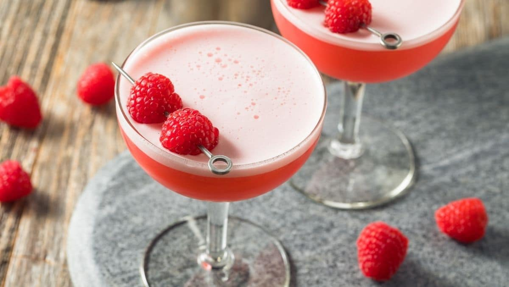

Clover Club

The Clover Club cocktail originated in Philadelphia, US. Initially, the cocktail was mixed exclusively
for a gentleman's club of the same name in the Bellevue-Stratford hotel.
Ingredients
- 45ml of dry gin
- 15ml of fresh lemon juice
- 15ml of dry vermouth
- 15ml raspberry liquer
- 1 egg white, whisked
- 2 - 4 raspberries for garnish
Steps
- Add all of the alcohol into a cocktail mixer without ice and shake well.
- Add ice to the shaker and shake well until chilled.
- Strain into a well chilled cocktail glass.
- Pour the whisked egg white onto the top of the cocktail, creating a 'head'.
- Garnish with raspberries skewered on a cocktail stick.